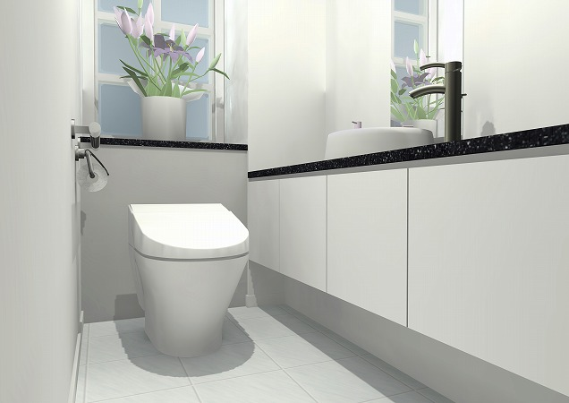
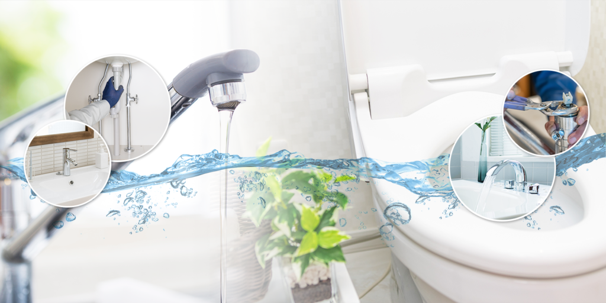

水まわり安心ライフ
埼玉県内4拠点から職人が直行。作業前に必ずお見積りをお出しし、ご納得いただいてから作業します。
Web割ホームページをご覧の方限定
「ホームページを見た」で基本料金から2,000円割引
お電話の際にひと言お伝えください。
Check
ひとつでも当てはまったら、まずはお電話を。症状を伺い、到着時間の目安をお伝えします。
Price
基本料金に作業内容に応じた部品代・作業費が加わります。作業前に総額をお見積りします。

トイレ
（水漏れ・つまり・あふれ）
基本料金 ¥8,000
Web割 ¥6,000〜
蛇口
（水漏れ・故障）
基本料金 ¥5,000
Web割 ¥3,000〜
パイプ・排水管
（水漏れ・つまり・故障）
給湯器
（水漏れ・不具合）
24時間受付・年中無休。お見積りは無料です。

Why Lily
さいたま・熊谷・春日部・川越の4拠点から、いちばん近い職人が向かいます。
作業内容と料金を書面でお伝えし、ご了承いただいてから作業します。勝手に作業を進めることはありません。
給排水工事の資格を持つ職人が対応。修理から配管工事、リフォームまで一社で完結します。
修理後に気になることがあれば、すぐにご連絡ください。地域の業者だからこそ、長くお付き合いできます。
Works
Voice
夜遅くの電話でもすぐ来てくれました。作業前に金額を説明してもらえたので安心でした。
他社の見積りより安く、説明も丁寧。次も頼みます。
来てくれた職人さんが親切で、ほかの水まわりも点検してくれました。
Flow
症状と場所を伺い、到着の目安時間をお伝えします。
職人が原因を調べ、修理方法をご説明します。
作業内容と料金を提示します。ご納得いただけなければ作業はしません。
ご了承後に作業を始めます。
現金・クレジットカードでお支払いいただけます。
Area
埼玉県全域に対応。4拠点から近くの職人が伺います。ご依頼に応じて関東全域も対応可能です。
Makers & Payment
現金／VISA／Mastercard／JCB／AMEX／Diners／DISCOVER
FAQ
24時間・年中無休で受け付けています。
はい、お見積りは無料です。金額にご納得いただけなければ作業はいたしません。
VISA・Mastercard・JCB・AMEX・Diners・DISCOVERがご利用いただけます。
TROUBLE GUIDE
症状から探したい方はこちら
お電話がいちばん早く対応できます。メールは24時間受付、翌営業日までにご連絡します。